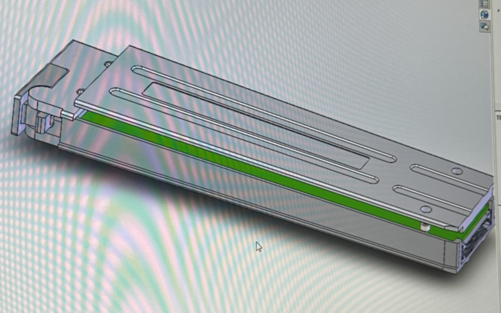

A seam that holds itself together.
The existing top shell needed to become a two-piece design. The obvious fix, a screw down the center seam, was off the table: it conflicts with the PCB, creates a rattle path under vibration, and puts a hole in the EMI boundary. The seam had to hold itself together mechanically and still be manufacturable in thin-gauge aluminum.
Joint concepts explored
I worked through a family of interlocking sheet-metal joints and evaluated each against snap-fit failure modes in 5052-H32 versus 6061-T6:
- J-return flanges
- Half-lap and shiplap seams
- Tongue-under-lip latches
- Hemmed tabs
- Keyhole fasteners
- Rabbet and step-lap joints
The alloys fail differently: 5052-H32 forgives bends and snaps, while 6061-T6 is stiffer but cracks sooner at tight radii. Joint geometry and bend radii were designed around whichever alloy the shop would run.


Everything it had to satisfy at once.
MIL-STD-461G
The seam and gasket path had to stay electrically continuous with no unshielded gaps.
MIL-STD-810G · DO-160G
Anti-rattle strategy and front-edge stability so the shell couldn't buzz or walk under vibration.
No PVC, no hex-chrome
Restricted coatings and gasket materials.
2280 and 22110 SSDs
One shell for both M.2 configurations, no second design.
Out of the PCB envelope
Drove the choice of captive panel screws and PEM hardware placement.
Clean increments
Height and width jumps rounded to 1/8" then 1/16" so the shop could form and inspect easily.
Sourcing, vaulting, proving it.
Fastener and hardware research
Much of the work was sourcing hardware that stays captive, resists loosening under vibration, and fits thin-gauge sheet. I compared D-ring, captive thumb and captive panel screws in #2-56 and #4-40, plus PEM self-clinching standoffs, flush-head studs, nuts and floating fasteners, pulling specs from McMaster-Carr and PEM and checking sheet-thickness and hole-size limits for each.
Process and tooling
- Modeled in SolidWorks sheet metal with flat patterns and bend tables the shop could run.
- Managed revisions in the PDM vault: suppressed feature folders, permission problems, checked-out locks, STEP export for vendors.
- Printed test coupons to validate 4-40 hole sizing before releasing metal.

Related work at ZMicro
- Rugged LCD displays and servers: designed and revised rear bezels and sheet-metal parts, resolved fastener fit-ups, and produced GD&T drawings with flatness callouts.
- Root-cause analysis: bright-spot defects on a rugged display that appeared only after housing rework, working through point-load concentration, trapped moisture, debris migration and backlight reseating.
- Thermal and power: a server heat-dissipation calculation with an electrical engineer, a watts / BTU-per-hour power spreadsheet, and a thermal-interface-material substitution.
- Change control: ECOs and interface control documentation for customer programs.
- Automation: a VBA macro auditing SolidWorks parts for missing custom properties, and a technical brief proposing AI in change-order, design-verification and PDM workflows on a FedRAMP-appropriate cloud.